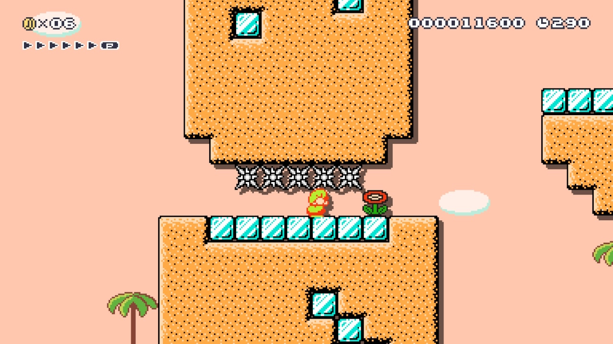
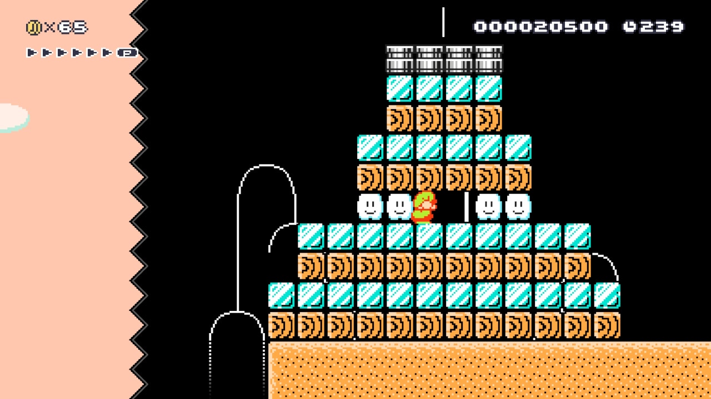
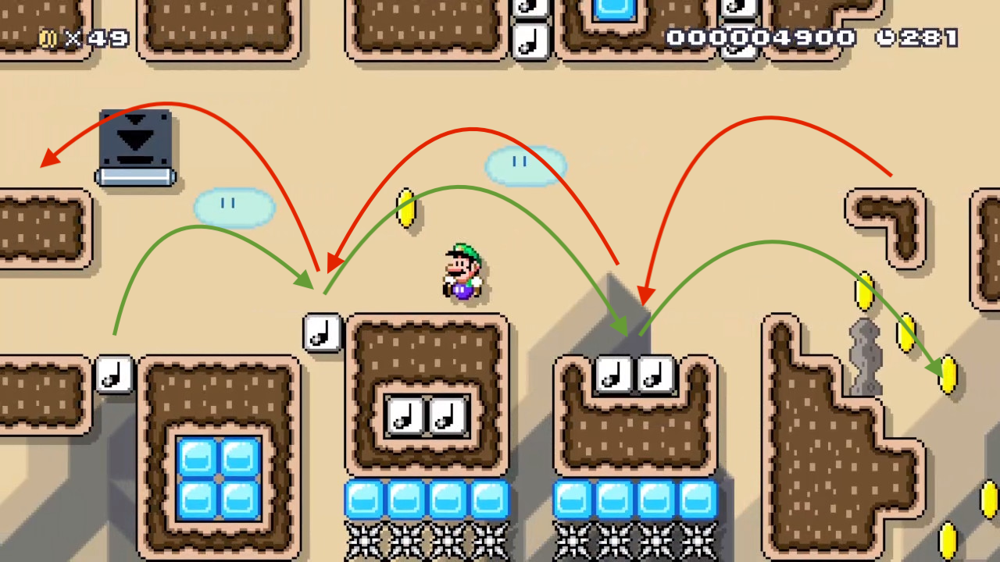

ERIC
SMITH
PORTFOLIO
Desert Solitaire
Super Mario Maker 2 World
Maker ID: 5NY-M5T-8VF
- Timeline: Three weeks
- Team: Eric Smith
- Tools: Mario Maker level editor
Overview:
The levels in this world were created as part of an ongoing Mario Maker level competition in which last week’s winner picks a theme, becomes the judge for next week, and so on. This world started when the group was encouraged to read a seminal piece of nature writing on the American West.
Dessert Sudoku
To create this level I wanted to give it my all, so I went the extra mile and read the entire book that week, taking down quotes of anything I thought could be inspiring.
”First descent into The Maze,” writes Waterman in the book, though we cannot be absolutely certain of this. And I write, “For God’s sake leave this country alone - Abbey.” To which Waterman adds “For Abbey’s sake leave this country alone - God.”
-Edward Abbey, Desert Solitaire
This anecdote caught my attention both as a humorous turn of phrase and as an idea for my level. There are no breakable blocks, no enemies you can hurt by landing on, just beautiful and dangerous desert. Leave it alone.
Designed Jumble
Theme: Use bouncy items without being annoying
These music blocks turned out to be a nice complement to the duck-slide mechanic, as it was now possible to move up while sliding. The variety this introduced lent itself to a more elaborate stage design, with multiple paths that often criss-cross each other.
While avoiding going too “auto-Mario” with it, I like to give the player the appearance of a lot going on without too many inputs. Don’t tell anyone, but most of my levels can be beat by simply running to the right and jumping at the right time.
Conclusion:
Making Mario levels is much like any other design project: research (a lifetime of playing and analyzing Mario), testing, and iteration are at least as important as the actual ideas and construction of the level. Taking a page out of the Nintendo playbook and building upon a single mechanic was both challenging and rewarding, and I’m very proud of the levels that came out of it.